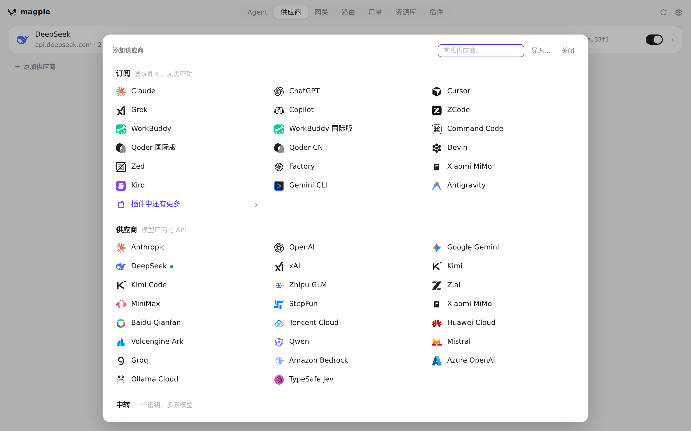
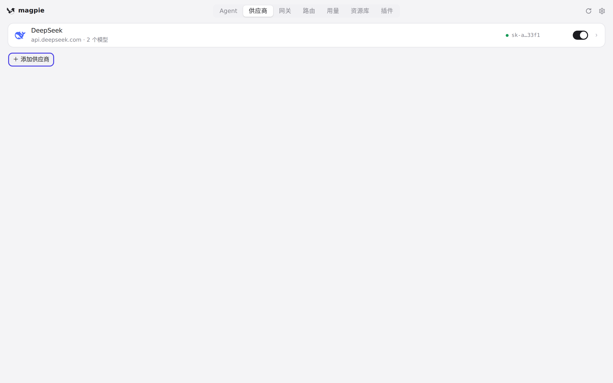
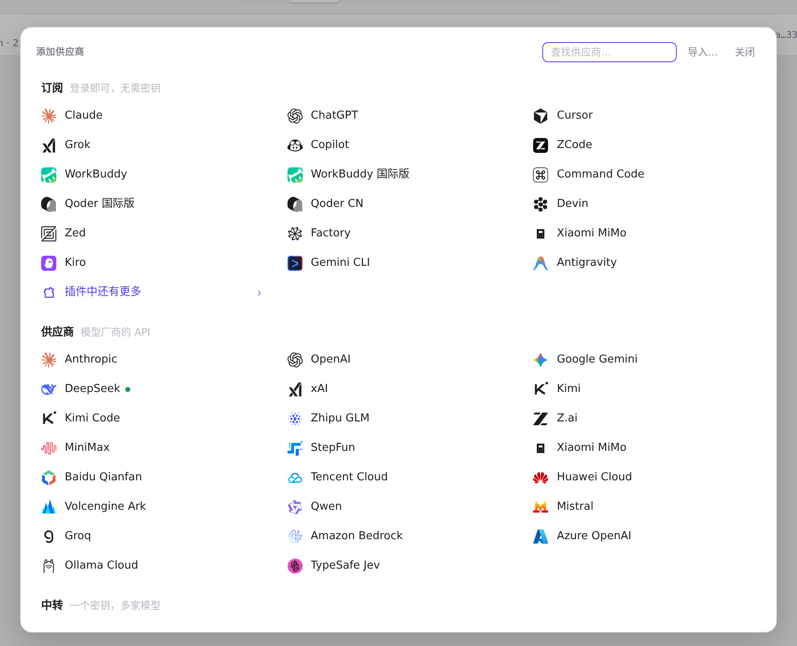
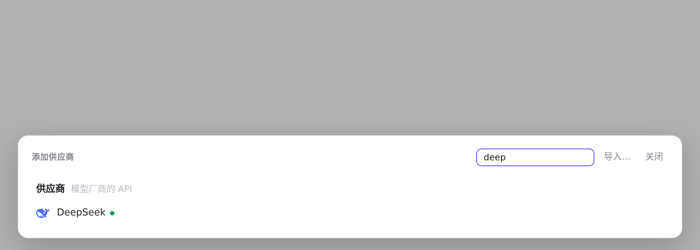
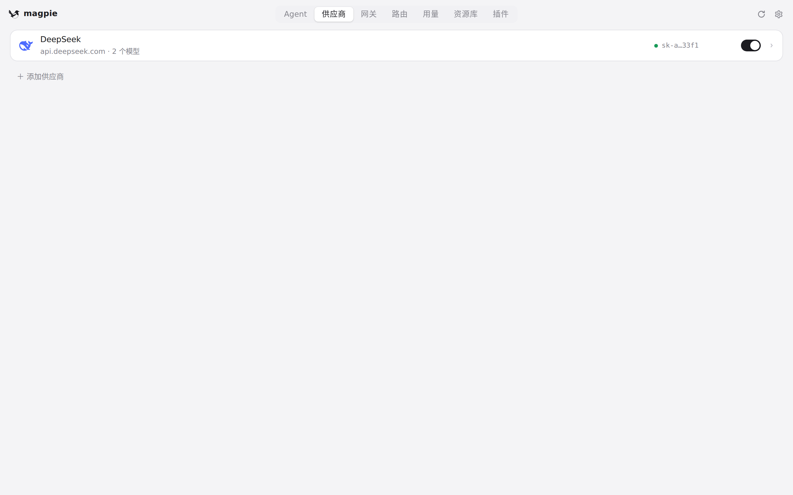

#433 界面预览
commit 07ed431 · 回到 PR · 供应商页的「添加供应商」不再把面板撑进列表并把页面滚下去，而是从底部浮出一个带遮罩的浮层盖在列表上，列表位置与滚动高度不变；浮层可用关闭按钮、遮罩空白处和 Esc 关闭，标题行改为可换行、选项区域自己滚动。
红线是鼠标走过的轨迹，红色圆环是一次点击；底部文字是这一步在做什么。空格暂停，← → 逐段查看。
 添加供应商浮层与 Esc 关闭 · 供应商页：DeepSeek，以及页面底部的「添加供应商」
添加供应商浮层与 Esc 关闭 · 供应商页：DeepSeek，以及页面底部的「添加供应商」

添加供应商浮层与 Esc 关闭 · 打开后的浮层与它下面的供应商列表

添加供应商浮层与 Esc 关闭 · 按 Esc 之后的供应商页

浮层内搜索与关闭按钮 · 浮层：标题行、搜索框和按钮

浮层内搜索与关闭按钮 · 筛选后的供应商选项区域

浮层内搜索与关闭按钮 · 用关闭按钮关掉之后的供应商页